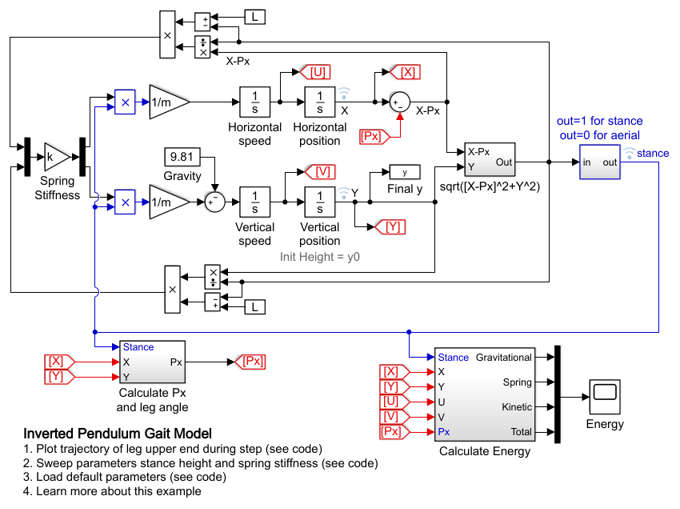
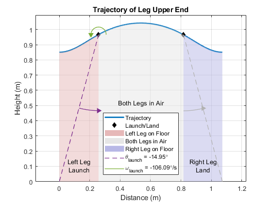
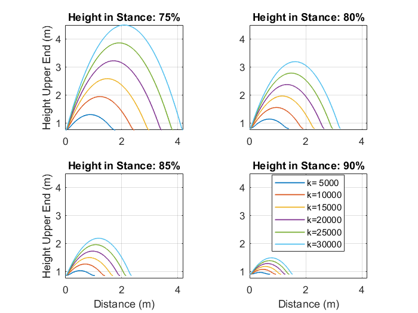
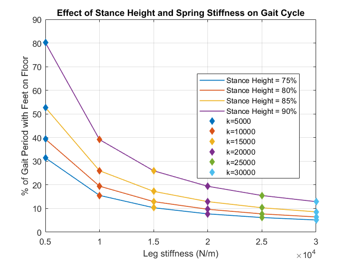
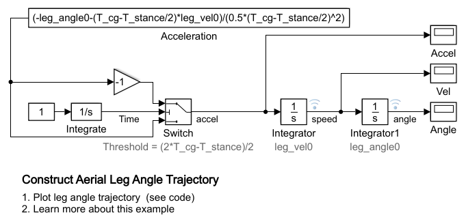
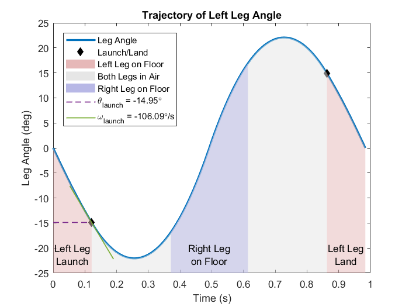
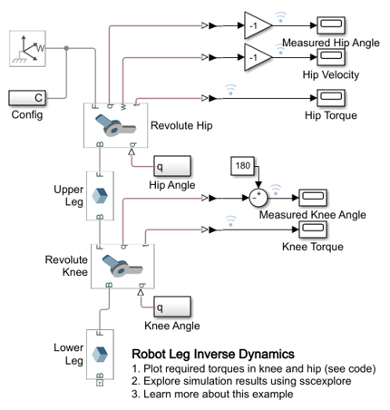
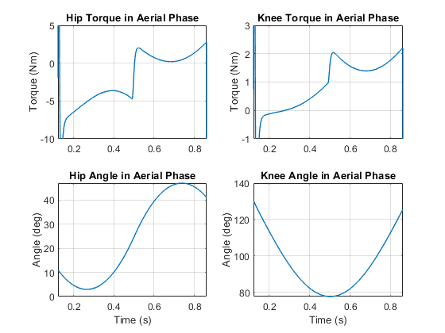
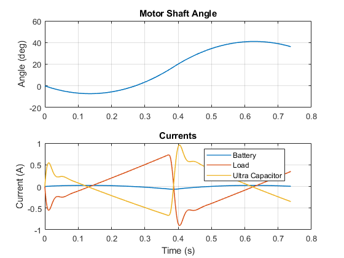

Mechatronic Running Robot Limb Design
This workflow example explains the steps of designing the limbs for a mechatronic running robot. The workflow is executed using a series of parameterized models so that redesigns can be executed automatically. You can explore alternative design choices using MATLAB script sm_robot_run_script_design_limb.m.
The resulting design is shown in Mechatronic Running Robot
Contents
Step 1: Gait Selection
This model implements an inverted pendulum gait model. It is assumed that the impact with the ground is lossless, and hence total energy of the system is always constant. The model can be used to explore the effect of leg stiffness, leg length, body mass and initial conditions on the trajectory. For designing a trotting quadraped robot, it can be used to pick leg stiffness given expected payload weight, leg length and desired gait frequency. This model uses SI units. An alternative is to use non-dimensionalized lengths which can give additional insights. Here the model is used to generate the ideal leg angle profile as a function of time during the stance. This is used by the sm_robot_run_04_actuator.slx model.
Model variables are as follows:
- [X,Y] is the position of the spring-supported mass
- Px is the horizontal position of the foot when in contact with the ground
- [U,V] are the horizontal and vertical speeds of the mass.
- Default parameters are:
- Leg length L=1m
- Mass m=25kg
- Spring stiffness k=5315N/m.
- Stance height (Y) = 0.85m i.e. the leg is 85% of unloaded length.
With these choices, the feet are touching the floor for half of the overall gait period. The simulation starts in mid-stance with U=2m/s.
These parameters present a design tradeoff. Too much time in the aerial phase leaves not enough time to put in locomotive torque during stance. Conversely, too much time in the stance may not leave enough time to swing the leg forward ready for the next stance phase. A parameter sweep can help identify good parameter combinations.
The plot below shows the phases of leg motion during a single step. It indicates the amount of time the leg spends in the air and shows the leg launch and land angles. This information is used to compute the angle trajectories for leg joints.
The plots below show the effect of stance height and spring stiffness on the percentage of time in a gait period that the leg is touching the floor. A deeper crouch and a stiffer spring will lead to a higher leap and less time spent on the floor.
 Step 2: Construct Trajectory of Leg Angle in Aerial Phase
This model determines the trajectory of the leg angle for a chosen target gait. A step is made up of the stance and aerial phases. Key parameters for the target gait are:
- The period of the body CG (T_cg)
- The time spent in stance (T_stance)
- The leg angle when the foot leaves the floor (leg_angle0)
- The leg rotation speed when the foot leaves the floor (leg_vel0)
Landing angle should be minus the take-off angle in order to replicate the ideal gait. This model is for a bipedal gait, so the body will rise and fall twice during one cycle of a leg (time for leg trajectory = 2*T_cg).
The plot below shows the trajectory of the leg angle during a gait period.
Step 3: Determine Required Joint Torques
This model determines the hip torque required during the aerial phase based on the gait modeled by the Simulink inverted pendulum model.
The plot below shows the required actuator torques at the hip and knee joints during the aerial phase.
Step 4: Design Actuator
This simplified actuator model is used for a number of purposes:
- To determine a suitable gearbox ratio and motor rating.
- Sizing the ultra capacitor for the power supply.
- For preliminary motor speed and shaft angle control design.
- A performance specification to a supplier if developing a bespoke solution.
- As a subsystem in the complete model of the final running robot to validate the design or different gaits, loads and terrains.
The plot below shows the current drawn by the load and the contribution from the battery and ultracapacitor during the test.
